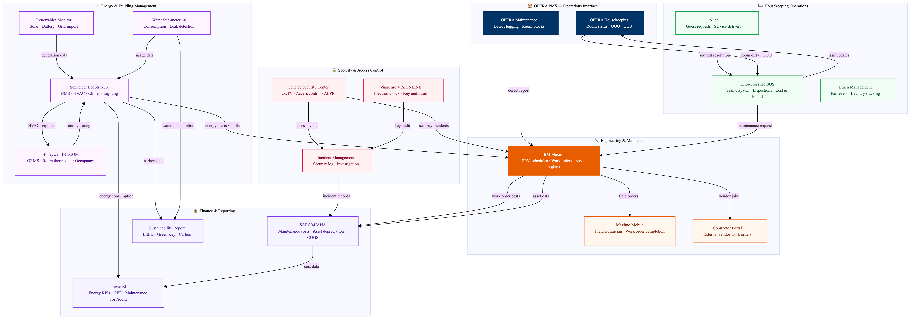

This diagram maps the Marriott property operations technology stack connecting engineering, housekeeping, energy management, and security. IBM Maximo is the central asset management hub, receiving defect reports from OPERA and Knowcross, managing preventive maintenance schedules, and routing corrective work orders to engineering teams. Schneider EcoStruxure monitors energy consumption and HVAC via the BMS, with alerts feeding back to Maximo. Genetec provides unified CCTV and access control with incidents linking to the security log. All maintenance costs and asset data flow to SAP S/4HANA for financial tracking and Power BI for KPI reporting.